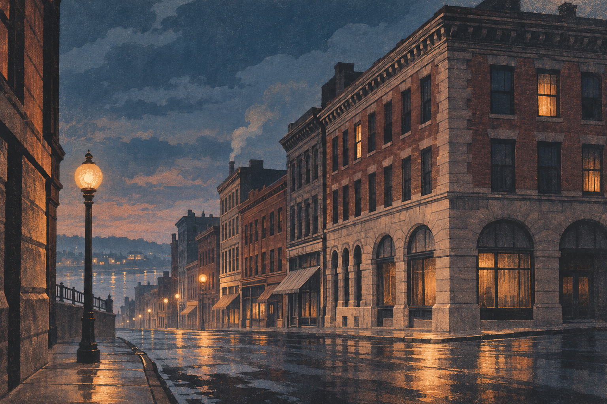
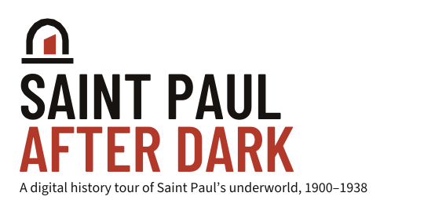
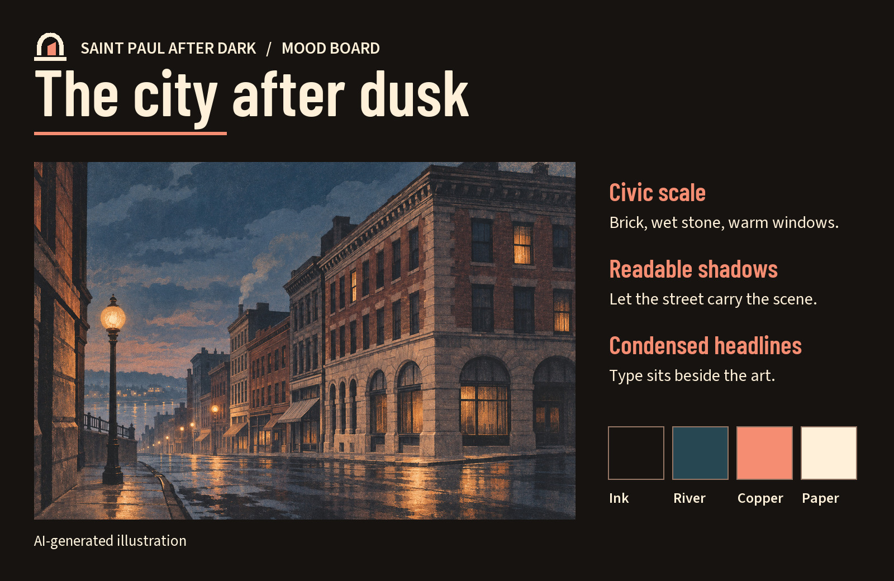
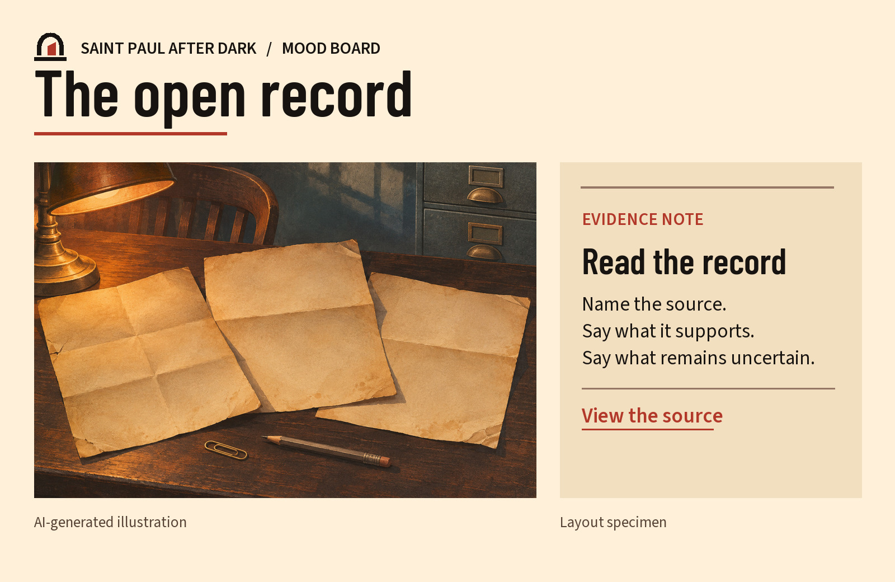
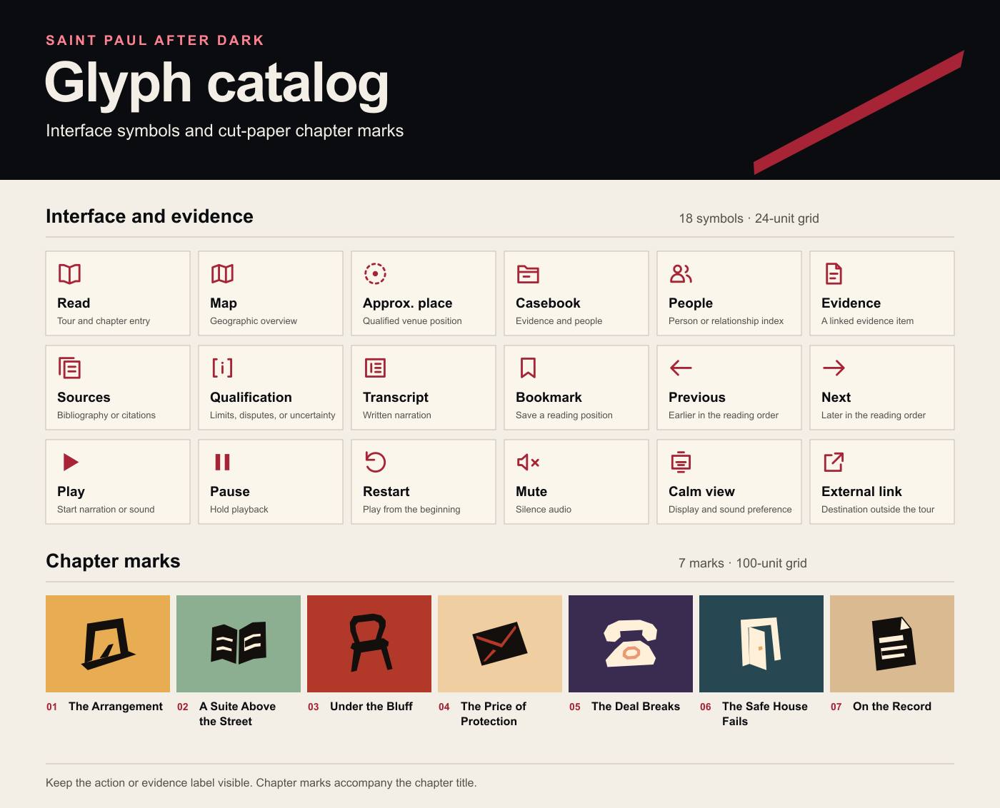
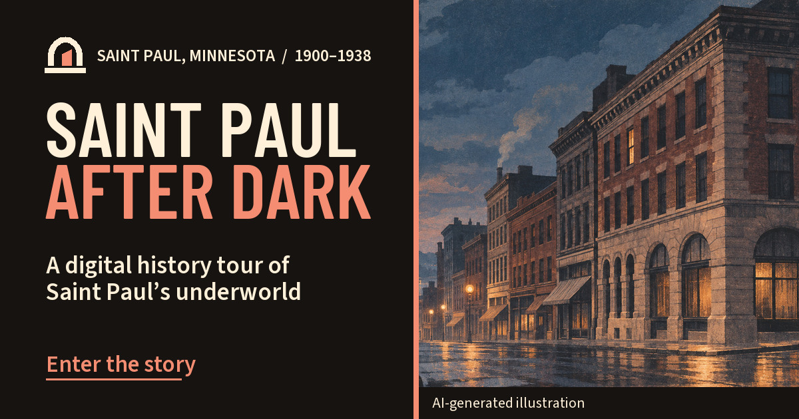
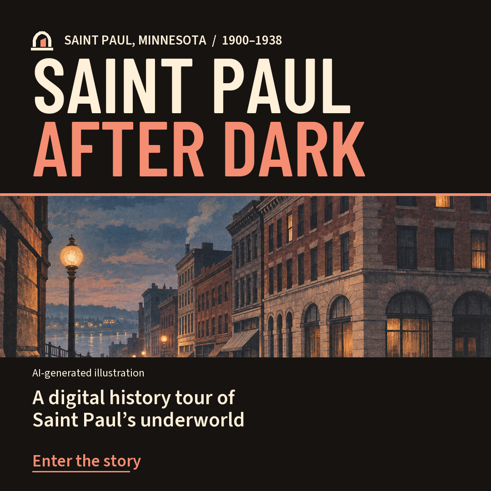
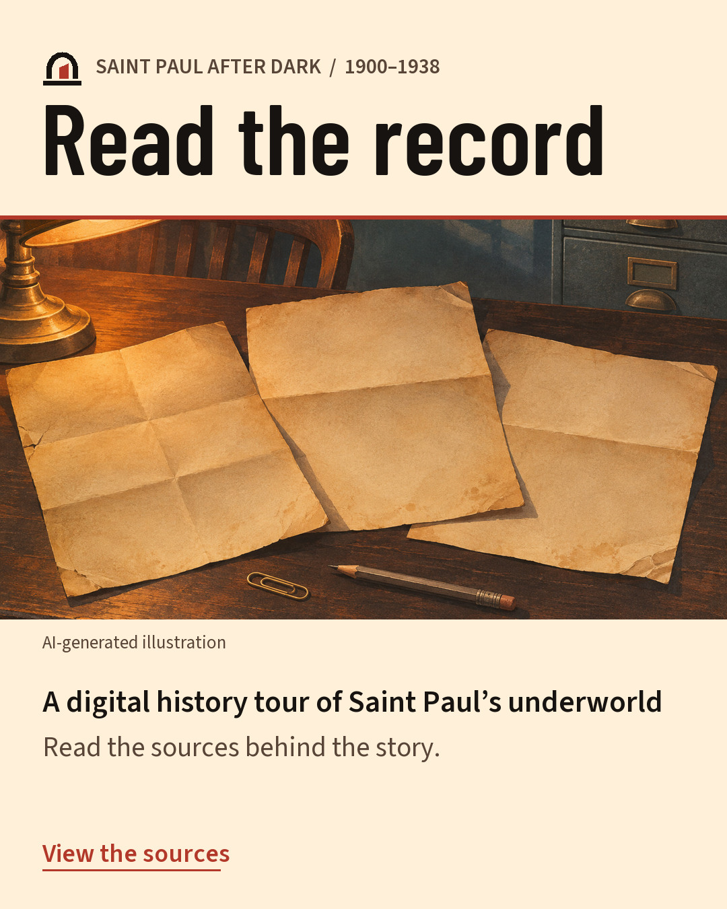

Chapter 03
Under the Bluff
Place the chapter title beside the cut-paper mark. Carry the same name into the reading rail.
Brand and marketing guide
A digital history tour of Saint Paul’s underworld, 1900–1938
Owner review edition · November 12, 2026

Read the story of the city’s protection arrangement at your own pace. Follow the people who made it work, the people who bore its costs, and the sources behind the account.
Lead with local history readers and Twin Cities residents. The illustrated seven-chapter reading experience and links to the evidence define the position among guided tours, reference articles, books, and at-home audio and video.
Read the positioning and SWOTWrite with the quiet attention of a local historian. Put people, decisions and consequences first. Tell readers what a record supports and where the account relies on interpretation.
Open the verbal identity guideThe arched mark adapts the existing favicon’s arch and base into a cut-paper aperture. The lit inset borrows the tour’s recurring window and doorway imagery.


Dark-field mark Light-field mark Ink mark White mark Social avatar PNG
After Dark
Semibold for titles, cover lines and chapter numbers. Use mixed case for long headlines. Campaign covers can use uppercase. Begin at 48–112 px for covers and 30–48 px for headings. Use a line height of 0.92–1.05 for short headlines.
Read the record at your own pace.
Regular for reading and semibold for actions and labels. Start at 19 px / 1.5 line height for web copy, 16 px for notes and 10–12 pt for print body copy. Aim for 55–66 characters per line. Bundle the supplied webfonts for web use.
Barlow Condensed desktop font Source Sans 3 regular Source Sans 3 semibold CSS tokens
#171310Night ground#FFF1D9Reading ground#F58D72Action on ink#B2382AAction on paper#594538Notes on paper#967765Dividers on paper#274852Secondary field#E8AD52Focus on ink| Foreground / background | Contrast | Use |
|---|---|---|
| Paper / Ink | 16.57:1 | Text on night field, or reverse |
| Copper / Ink | 7.86:1 | Headline accent and action |
| Oxblood / Paper | 5.39:1 | Link, label, or focus ring |
| Ash / Paper | 8.07:1 | Notes and captions |
| Rule / Paper | 3.68:1 | Dividers and graphic boundaries |
| Paper / River | 8.82:1 | Text on a secondary field |
| Brass / Ink | 9.26:1 | Focus ring |
Use 4.5:1 or better for ordinary text and 3:1 for meaningful graphic elements against adjacent colors. Check the actual foreground and background where texture, an image, or opacity enters the layout. The tour’s existing CSS uses additional interface and chapter colors. WCAG 2.2 contrast criteria


Use brick, wood, paper and water to establish place. Favor a single strong object or view. Label imagined scenes “AI-generated illustration.” Credit archive materials with their actual collection, date, reference and permission. Keep illustration credits with crops and thumbnails. Place archival material in its own clearly captioned figure.
Use the diagonal record rules as a small cover or section accent. Put captions, sources and reading text on a clear field. On sound-led surfaces, keep narration and ambience opt-in. Preserve a complete silent and still treatment.
City at Dusk JPG Reading the Record JPG Record rules SVG Artwork register and credits
Use outline glyphs for actions and evidence. Keep the seven cut-paper symbols with their corresponding chapters and give each symbol its own color field.

Chapter 03
Place the chapter title beside the cut-paper mark. Carry the same name into the reading rail.
Evidence panel specimen
Explain what the item supports in a short paragraph. Follow with the limit of the evidence in plain language.
Identify the detail the cited material leaves unresolved.
Use an 8 px spacing base, generous gutters, and a single reading column on small screens. Wide screens can carry an adjacent evidence or context panel. Let the section title, current chapter, and next action stay easy to find.
Use “Enter the story” for the main invitation. Follow it with distinct destinations such as “Read the prologue,” “View map,” and “View the sources.”
Set evidence blocks on paper with a short title, what the item supports, what remains uncertain, and a direct source link. Use a visible legend for approximate positions. Keep the chapter and venue directory readable without the map.
Use a short cut or page transition to orient the reader. Give Calm view and reduced motion a readable, still version of the same content. Start each sound channel by explicit action and keep narration and transcript within reach.
Use descriptive text on controls, a 44 × 44 CSS px target, and a visible keyboard focus ring. Provide link text, marks, or status words wherever color signals state. Keep text selectable and confirm reflow with larger type.
Introduce the story with the city illustration. Follow with an evidence teaser for readers who want to see how the account was assembled.
Marketing plan and copy bank Press and partner kit

1200 × 630 · Homepage and newsletter shares

1080 × 1080 · Feed and listing cards

1080 × 1350 · Follow-up post linking to Sources
| Asset | Export | Editable source |
|---|---|---|
| Portrait feed announcement · 1080 × 1350 | JPG | Portrait SVG |
| Story · 1080 × 1920 | JPG | Story SVG |
| US Letter poster · 8.5 × 11 in | PDF proof | Poster SVG |
| Partner card · 6 × 4 in | PDF proof | Partner card SVG |
Owner review edition. The project is a working preview. Confirm the name, canonical destination, and usage permissions before wide distribution. The print proofs carry an editable [TOUR URL] field.
ArtImage.astro for new served illustration.